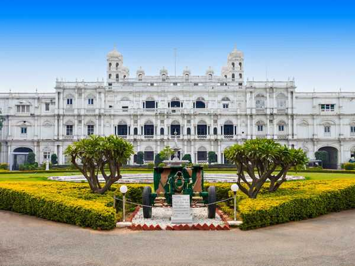
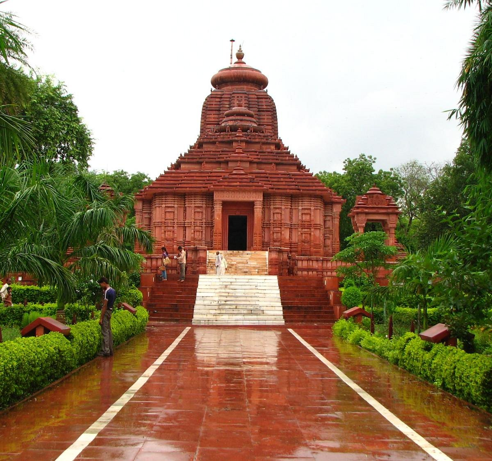
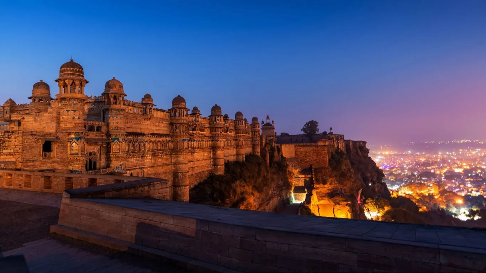
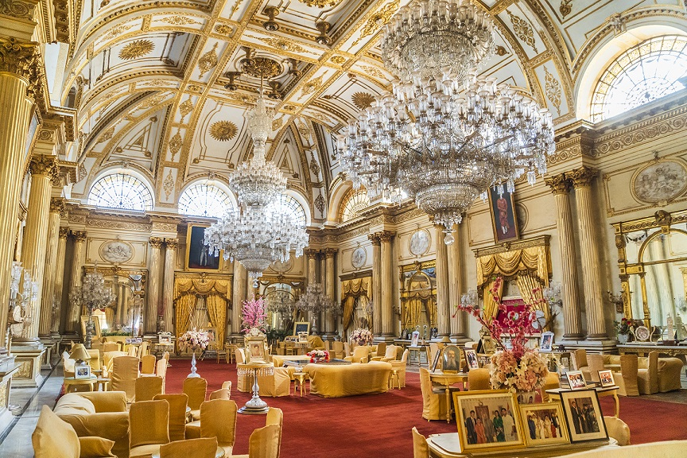
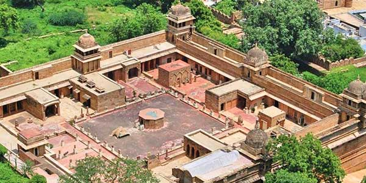

Home About Service Contactus
PLACE TO VISIT IN GWALIOR

The Gwalior Fort, commonly known as the Gwāliiyar Qila, is a hill fort near Gwalior, Madhya Pradesh, India. The fort has existed at least since the 10th century, and the inscriptions and monuments found within what is now the fort campus indicate that it may have existed as early as the beginning of the 6th century. The modern-day fort, embodying a defensive structure and two palaces was built by the Tomar Rajput[2] ruler Man Singh Tomar.[1] The fort has been administered by a number of different rulers in its history. The present-day fort consists of a defensive structure and two main palaces, "Man Mandir" and Gujari Mahal, built by Tomar Rajput ruler Man Singh Tomar (reigned 1486–1516 CE), the latter one for his wife, Queen Mrignayani.[1] The second oldest record of "zero" in the world was found in a small temple (the stone inscription has the second oldest record of the numeric zero symbol having a place value as in the modern decimal notation), which is located on the way to the top. The inscription is around 1500 years old

The Jai Vilas Mahal, also known as the Jai Vilas Palace, is a nineteenth century palace in Gwalior, India. It was built in 1874 by Jayajirao Scindia, the Maharaja of Gwalior in the British Raj.[1] While the major part of the palace is now the "Jiwajirao Scindia Museum" which opened to the public in 1964, a part of it is still the residence of some of his descendants. Jai Vilas Palace is a fine example of European architecture. It was designed and built by Sir Michael Filose.[2] It is a combination of architectural styles, the first storey is Tuscan, the second Italian-Doric and the third Corinthian. The area of the Palace is 124,771 square feet and it is known for its large Durbar Hall. The interior of the Durbar Hall is decorated with gilt and gold furnishings and adorned with a huge carpet and gigantic chandeliers. It is 30 metres (100 ft) long, 15 metres (50 ft) wide and 12 metres (41 ft) in height. The palace was described by Sir William Howard Russell in 1877

The Surya Mandir or Sun Temple is one of the most spectacular shrines as well as an architectural wonder that adorns the city of Gwalior. As the name suggests, the temple is dedicated to the holy Sun God and was constructed in the year 1988 by the famous industrialist G.D. Birla. Built on the lines of legendary Sun Temple at Konark, Orissa, the Sun Temple of Gwalior is a magnificent amalgam of exquisite architecture in red sandstone and pearly white marble. As you encounter the outer edifice you will see the red sandstone exterior of the Sun Temple built in the manner of gradual slots that reach up to the peak of the facade. A splendid idol of the Sun Lord is enshrined in the temple. Although not constructed long ago, it is among the most revered shrines in the ancient city attracting tourists and devotees from all over the country in large numbers.

The Gwalior Fort, commonly known as the Gwāliiyar Qila, is a hill fort near Gwalior, Madhya Pradesh, India. The fort has existed at least since the 10th century, and the inscriptions and monuments found within what is now the fort campus indicate that it may have existed as early as the beginning of the 6th century. The modern-day fort, embodying a defensive structure and two palaces was built by the Tomar Rajput[2] ruler Man Singh Tomar.[1] The fort has been administered by a number of different rulers in its history. The present-day fort consists of a defensive structure and two main palaces, "Man Mandir" and Gujari Mahal, built by Tomar Rajput ruler Man Singh Tomar (reigned 1486–1516 CE), the latter one for his wife, Queen Mrignayani.[1] The second oldest record of "zero" in the world was found in a small temple (the stone inscription has the second oldest record of the numeric zero symbol having a place value as in the modern decimal notation), which is located on the way to the top. The inscription is around 1500 years old
Gwalior Fort



The Jai Vilas Mahal, also known as the Jai Vilas Palace, is a nineteenth century palace in Gwalior, India. It was built in 1874 by Jayajirao Scindia, the Maharaja of Gwalior in the British Raj.[1] While the major part of the palace is now the "Jiwajirao Scindia Museum" which opened to the public in 1964, a part of it is still the residence of some of his descendants. Jai Vilas Palace is a fine example of European architecture. It was designed and built by Sir Michael Filose.[2] It is a combination of architectural styles, the first storey is Tuscan, the second Italian-Doric and the third Corinthian. The area of the Palace is 124,771 square feet and it is known for its large Durbar Hall. The interior of the Durbar Hall is decorated with gilt and gold furnishings and adorned with a huge carpet and gigantic chandeliers. It is 30 metres (100 ft) long, 15 metres (50 ft) wide and 12 metres (41 ft) in height. The palace was described by Sir William Howard Russell in 1877
JaiVilas Palace
The Gwalior Fort, commonly known as the Gwāliiyar Qila, is a hill fort near Gwalior, Madhya Pradesh, India. The fort has existed at least since the 10th century, and the inscriptions and monuments found within what is now the fort campus indicate that it may have existed as early as the beginning of the 6th century. The modern-day fort, embodying a defensive structure and two palaces was built by the Tomar Rajput[2] ruler Man Singh Tomar.[1] The fort has been administered by a number of different rulers in its history. The present-day fort consists of a defensive structure and two main palaces, "Man Mandir" and Gujari Mahal, built by Tomar Rajput ruler Man Singh Tomar (reigned 1486–1516 CE), the latter one for his wife, Queen Mrignayani.[1] The second oldest record of "zero" in the world was found in a small temple (the stone inscription has the second oldest record of the numeric zero symbol having a place value as in the modern decimal notation), which is located on the way to the top. The inscription is around 1500 years old
Surya Mandir
Other Places

Thanks for visiting